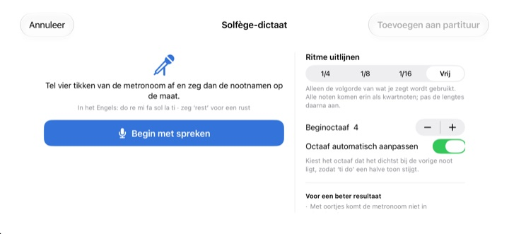
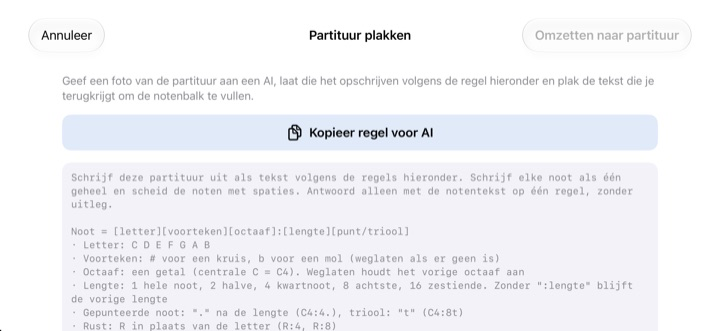

Stop met tellen in je hoofd.
Luister gewoon.
Zet de twee maten waar je over struikelt op de notenbalk en druk op Afspelen. Na één maat voortel speelt StaffSinger ze af op de tik van de metronoom, met het precieze ritme en de juiste toonhoogte.
Alle functies zijn gratis. Voor iPhone en iPad.

Zet een paar noten neer en luister
Houd de notenbalk ingedrukt, schuif omhoog of omlaag om de toonhoogte te veranderen en laat los om de noot te plaatsen. Druk op Afspelen voor één maat voortel en daarna je noten. Zet het geluid aan, de pagina speelt geluid af.
Weer de tel kwijt halverwege de maat?
Een gepunteerde achtste, dan een zestiende en meteen daarna een triool, en meetikken op je knie loopt vast. Vaak staat er ook geen piano in de buurt, zoals de avond voor de repetitie. Zet die twee maten in StaffSinger en de app speelt ze precies zoals ze er staan.
Hoor precies het ritme en de toonhoogte
Na één maat voortel klinkt de muziek op de tik van de metronoom en licht de klinkende noot oranje op. Stel het tempo in tussen 40 en 200 BPM en kies 4/4, 3/4, 2/4, 6/8, 2/2 of 3/8.
Stapel noten op dezelfde tel en ze klinken samen als akkoord, en schrijf in maximaal drie stemmen. Viool-, alt- en bassleutel en voortekeningen zijn er allemaal.

Zing de nootnamen, krijg de noten
Na vier tikken van de metronoom zeg je do re mi hardop op de maat, en ze komen op de notenbalk. Spreek je precies op de tel, dan wordt ook het ritme vastgelegd, in kwarten, achtsten of zestienden. Zeg rest voor een rust.
Zeg de namen in het Engels: do re mi fa sol la ti, dus ti in plaats van si. De spraakherkenning gebeurt op je apparaat en er wordt niets bewaard.

Geef de foto aan een AI, plak het resultaat
Tik op Kopieer regel voor AI, geef die samen met een foto van je partituur aan een AI en plak wat je terugkrijgt. De notenbalk vult zich. Het formaat staat in de tabel hieronder.
Je kunt ook de gedrukte bladzijde fotograferen en op het scherm houden terwijl je hem met de hand overschrijft.

In drie stappen aan de slag
- 1
Kies de lastige maten
De app opent met een lege notenbalk van twee maten.
- 2
Zet de noten neer
Druk op de notenbalk of speel op de pianotoetsen.
- 3
Druk op Afspelen
Eerst de voortel, dan afspelen met metronoom.
Tekstformaat om te plakken
- C4:4
- C in octaaf 4, kwartnoot (de centrale C is C4)
- D:8
- Laat je het octaaf weg, dan geldt het vorige
- F#4:8 · Bb4:4
- # voor een kruis, b voor een mol
- E4
- Laat je :lengte weg, dan geldt de vorige lengte
- :1 · :2 · :4 · :8 · :16
- hele, halve, kwart, achtste, zestiende
- C4:4.
- gepunteerde noot
- C4:8t
- triool
- R:4 · R:8
- rusten
De knop Kopieer regel voor AI in de app kopieert precies deze instructies. Scheid de noten met spaties.
Alles is gratis
Gratis
- Invoer op de notenbalk en pianotoetsenbord van twee octaven
- Afspelen met voortel en metronoom
- Akkoorden en drie stemmen
- Voortekeningen en drie sleutels
- Solfège-dictaat
- Plakken als tekst en referentiefoto's
Steun de ontwikkelaar
- Geef een kleine fooi via Instellingen
- Een fooi ontgrendelt niets extra's
Geen abonnement. Elke fooi is een eenmalige betaling.
Geen advertenties en geen account nodig.
Vragen
Hoe voeg ik noten toe?
Kies eerst een nootwaarde in de werkbalk en druk dan op de notenbalk op de gewenste toonhoogte. Zolang je vasthoudt hoor je de noot, en bij loslaten wordt hij toegevoegd. Tik op de toetsenbordknop om noten in te voeren op een piano van twee octaven.
Hoe maak ik een akkoord?
Zet de knop Akkoord in de werkbalk aan en voeg noten toe. Ze worden op de geselecteerde noot gestapeld en klinken samen.
Hoe verbeter ik een noot?
Sleep een noot omhoog of omlaag om de toonhoogte te veranderen, of opzij om hem naar een andere tel te verplaatsen. Met een noot geselecteerd verschuiven de knoppen ♯ en ♭ hem een halve toon en de 8va-knoppen een octaaf.
Waar verander ik het tempo of de maatsoort?
In Instellingen, samen met de sleutel en de voortekening. Daar zet je ook de metronoom en de voortel aan of uit.
Ik hoor niets.
Controleer de stille modus en het mediavolume. Hoor je alleen de metronoom niet, kijk dan in Instellingen onder Afspeelhulp of de metronoom aanstaat.
Het dictaat haalt noten door elkaar.
Gebruik oortjes zodat de metronoom niet in de microfoon lekt, en zeg per tel één duidelijke nootnaam. Komt een noot verkeerd uit, sleep hem dan naar de goede plek.
Waarom heeft de app de camera nodig?
Alleen om een referentiefoto van je bladmuziek te maken en op het scherm te tonen. Foto's verlaten je apparaat nooit, en je kunt er ook een uit je fotobibliotheek kiezen zonder de camera toe te staan.
Op welke apparaten werkt de app?
Op iPhone en iPad met iOS 17 of nieuwer. De app is gemaakt voor liggend gebruik.
Wordt mijn muziek of stem ergens naartoe gestuurd?
Nee. Je partituren, foto's en stem blijven op je apparaat, en alles werkt offline. Alleen anonieme gebruiksstatistieken en crashrapporten gaan naar iCloud, zodat fouten in de app opgelost kunnen worden.
Hoe neem ik contact op?
Mail naar leeo@kakao.com. Meestal krijg je binnen 2 tot 3 werkdagen antwoord. Bugmeldingen en ideeën voor functies zijn ook welkom als issue op GitHub, bij M1zz/StaffSinger.
Vragen of feedback? Schrijf naar leeo@kakao.com.